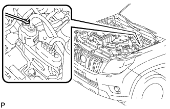

ВОЗДУШНЫЙ НАГНЕТАТЕЛЬ > ПРОВЕРКА БЕЗ СНЯТИЯ С АВТОМОБИЛЯ |
| 1. ПРОВЕРЬТЕ ВОЗДУШНЫЙ НАГНЕТАТЕЛЬ В СБОРЕ |
Запустите и прогрейте двигатель.
Выключите зажигание.
|  |
Подсоедините щуп 400 А амперметра к положительному (+) выводу воздушного нагнетателя.
Подсоедините портативный диагностический прибор к DLC3.
Включите зажигание и портативный диагностический прибор.
Войдите в следующие меню: Powertrain / Engine and ECT / Utility / Air injection check / Manual Mode / AIR PUMP: ON (ВКЛ), ASV: OPEN.
Измерьте ток во время работы воздушного нагнетателя.
| Режим работы прибора | Воздушный нагнетатель | ASV | Заданные условия |
| ВОЗДУШНЫЙ НАГНЕТАТЕЛЬ: ON (ВКЛ), ASV: ОТКРЫТО | ON (ВКЛ) | OPEN | 10 - 40 A |
| ВОЗДУШНЫЙ НАГНЕТАТЕЛЬ: OFF (ВЫКЛ), ASV: ЗАКРЫТО | OFF (ВЫКЛ) | CLOSE | Менее 1 А |
Выключите зажигание.